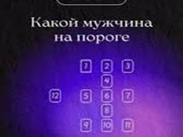
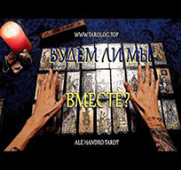

Все статьи на сайте

K Таро надо относиться не как к волшебной таблетке

Какой мужчина на пороге?
Расклады таро помогут найти вторую половину.

Как правило, расклады таро на вопрос о том, будем ли мы вместе
«Да-Нет» поможет определиться с правильным выбором.

Колесо Фортуны у людей ассоциируется с успехом и везением.